V33.6.1 — Native CAD review
14 native CAD reviews. Front ergonomic buttons restored; clean open-edge playfield relief. Full-sheet release remains blocked. Report
Button comparison — WRONG V33.6 · Y255 / Y310, Z270
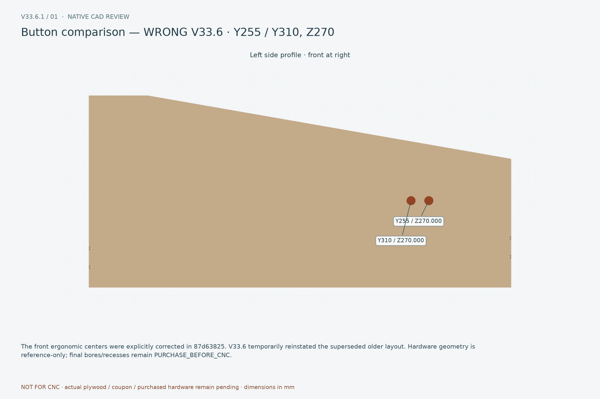
The front ergonomic centers were explicitly corrected in 87d63825. V33.6 temporarily reinstated the superseded older layout. Hardware geometry is reference-only; final bores/recesses remain PURCHASE_BEFORE_CNC.
Button comparison — OWNER AUTHORITY · Y89 / Y127, local top −65
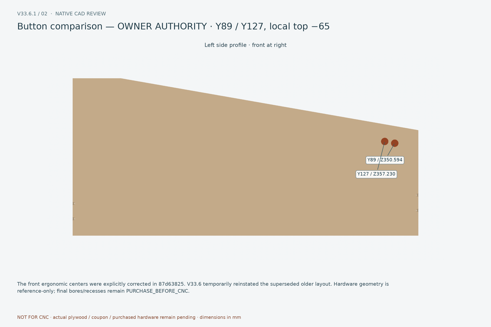
The front ergonomic centers were explicitly corrected in 87d63825. V33.6 temporarily reinstated the superseded older layout. Hardware geometry is reference-only; final bores/recesses remain PURCHASE_BEFORE_CNC.
Correct front buttons — interior service
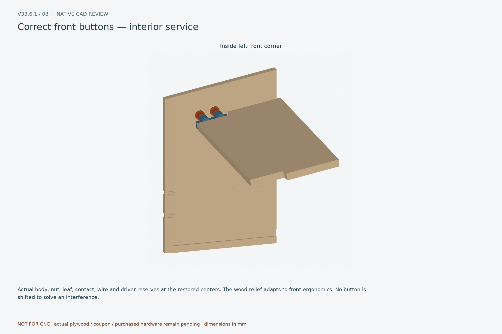
Actual body, nut, leaf, contact, wire and driver reserves at the restored centers. The wood relief adapts to front ergonomics. No button is shifted to solve an interference.
Historical horn — rejected contour
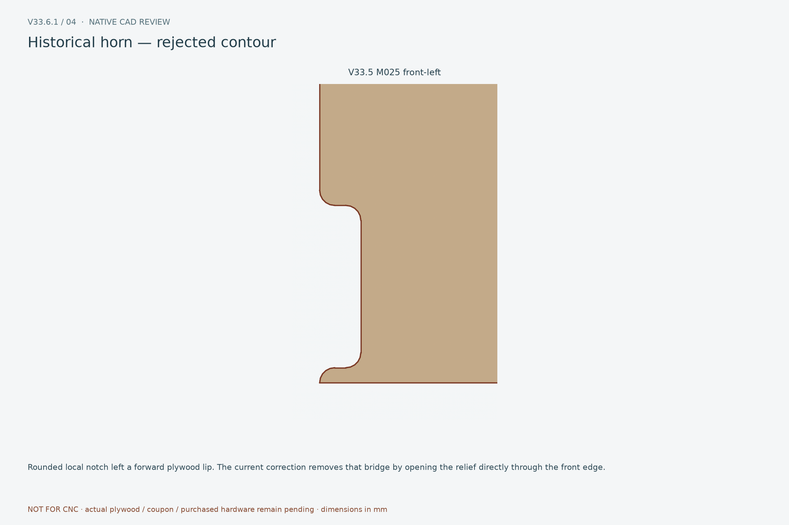
Rounded local notch left a forward plywood lip. The current correction removes that bridge by opening the relief directly through the front edge.
M025 — clean open-front relief
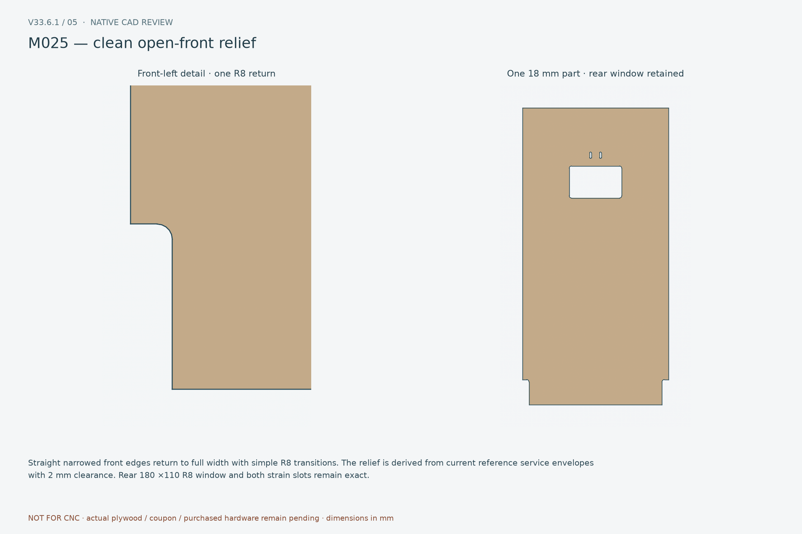
Straight narrowed front edges return to full width with simple R8 transitions. The relief is derived from current reference service envelopes with 2 mm clearance. Rear 180 ×110 R8 window and both strain slots remain exact.
M025 historical/current overlay
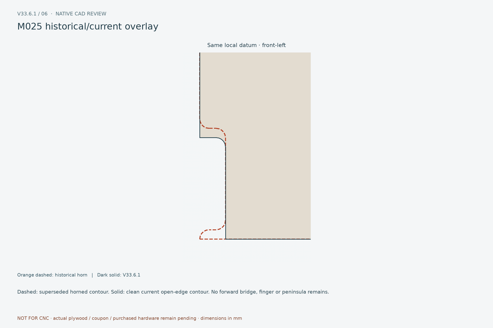
Dashed: superseded horned contour. Solid: clean current open-edge contour. No forward bridge, finger or peninsula remains.
Button body / nut clearance
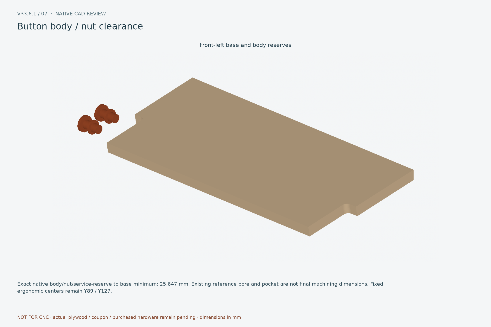
Exact native body/nut/service-reserve to base minimum: 25.647 mm. Existing reference bore and pocket are not final machining dimensions. Fixed ergonomic centers remain Y89 / Y127.
Leaf / wire / tool clearance and access
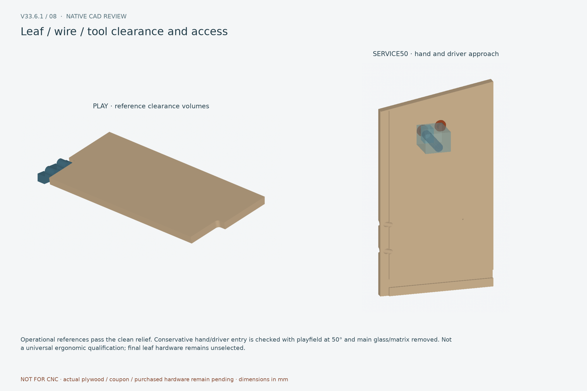
Operational references pass the clean relief. Conservative hand/driver entry is checked with playfield at 50° and main glass/matrix removed. Not a universal ergonomic qualification; final leaf hardware remains unselected.
Playfield PLAY — clean relief
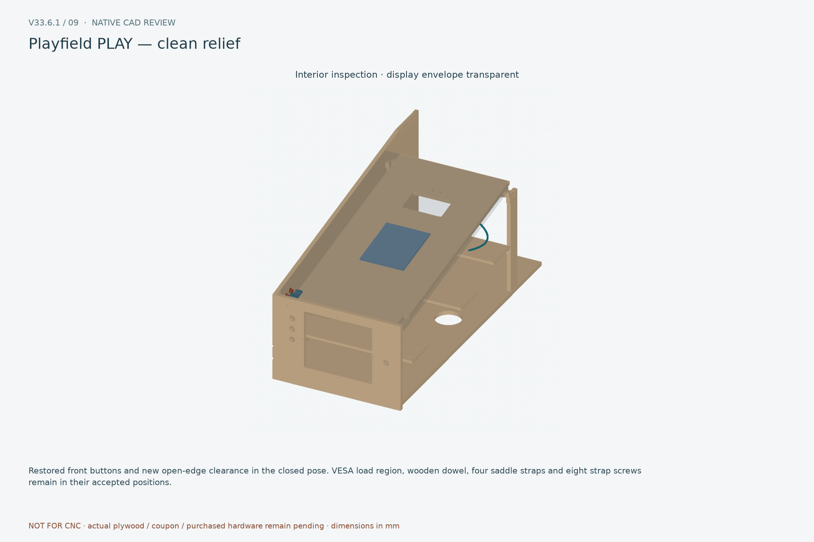
Restored front buttons and new open-edge clearance in the closed pose. VESA load region, wooden dowel, four saddle straps and eight strap screws remain in their accepted positions.
Playfield 50° service
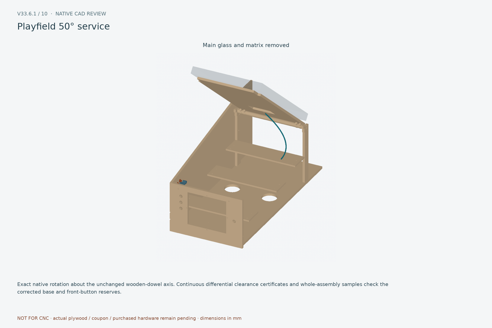
Exact native rotation about the unchanged wooden-dowel axis. Continuous differential clearance certificates and whole-assembly samples check the corrected base and front-button reserves.
48 mm lift-out — cable route retained
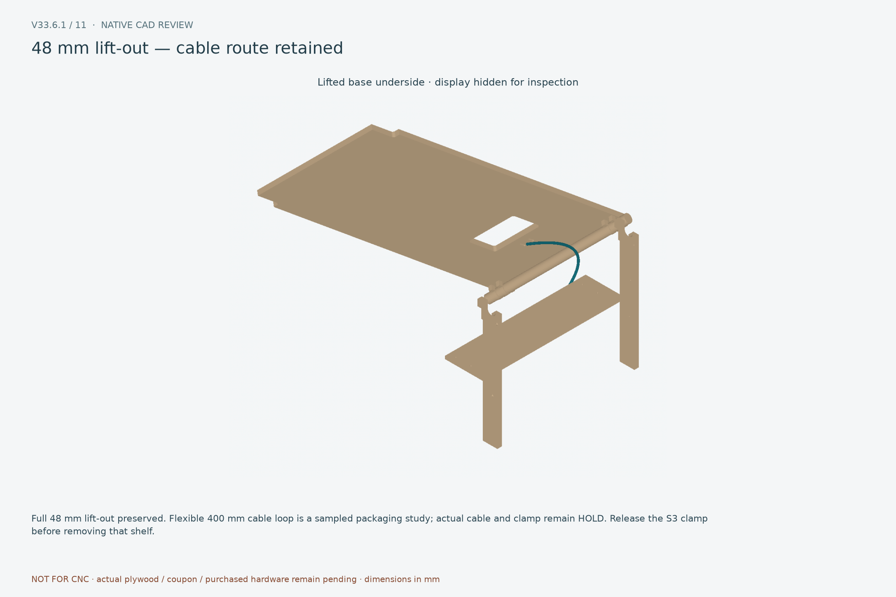
Full 48 mm lift-out preserved. Flexible 400 mm cable loop is a sampled packaging study; actual cable and clamp remain HOLD. Release the S3 clamp before removing that shelf.
Player-left — CURRENT V33.6.1
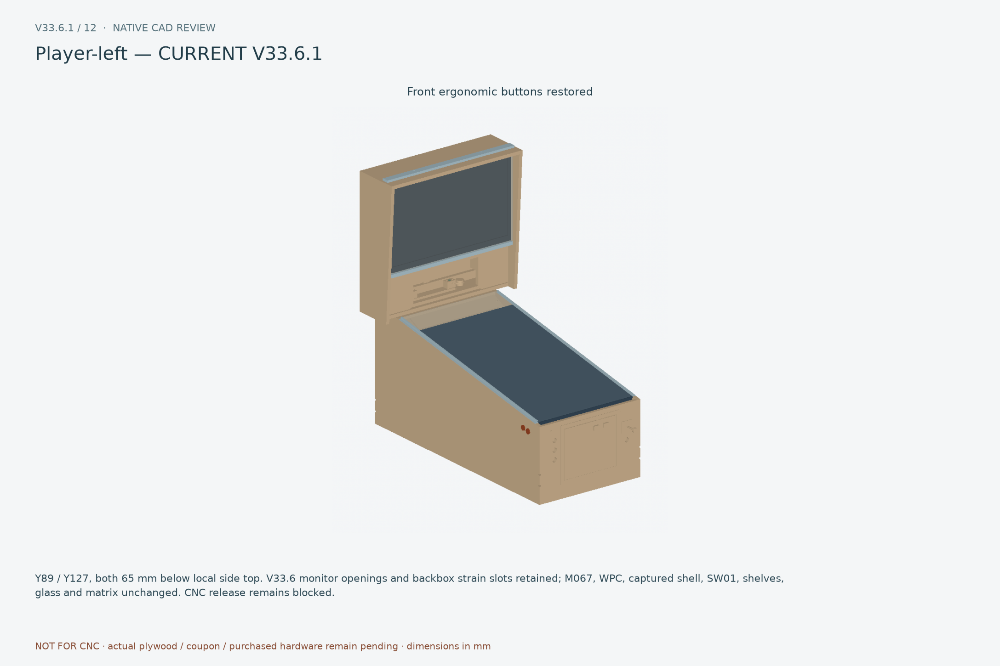
Y89 / Y127, both 65 mm below local side top. V33.6 monitor openings and backbox strain slots retained; M067, WPC, captured shell, SW01, shelves, glass and matrix unchanged. CNC release remains blocked.
Player-right — CURRENT V33.6.1
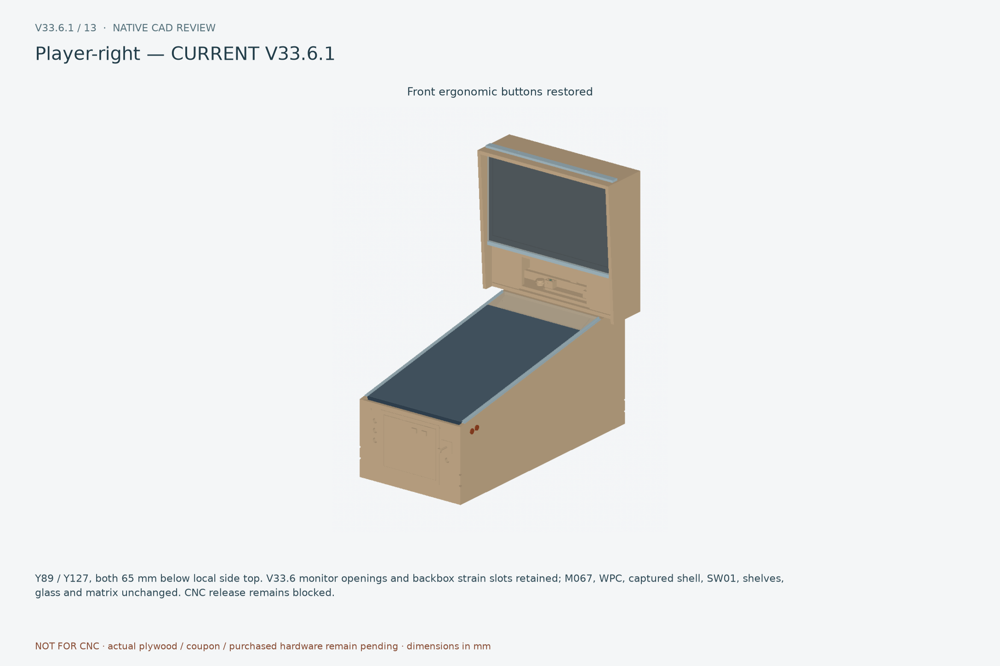
Y89 / Y127, both 65 mm below local side top. V33.6 monitor openings and backbox strain slots retained; M067, WPC, captured shell, SW01, shelves, glass and matrix unchanged. CNC release remains blocked.
Front oblique — CURRENT V33.6.1
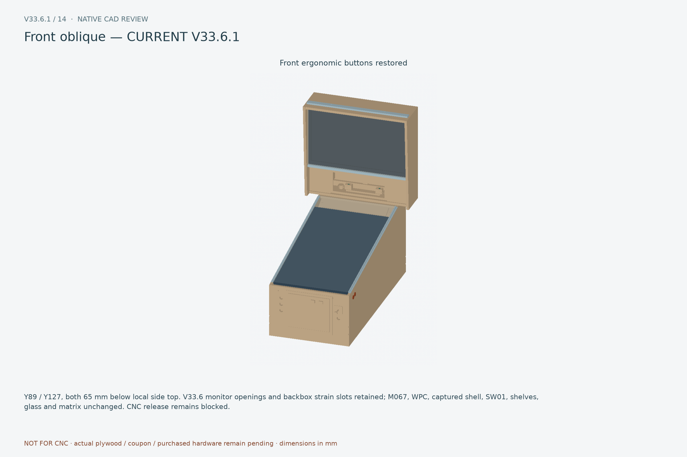
Y89 / Y127, both 65 mm below local side top. V33.6 monitor openings and backbox strain slots retained; M067, WPC, captured shell, SW01, shelves, glass and matrix unchanged. CNC release remains blocked.